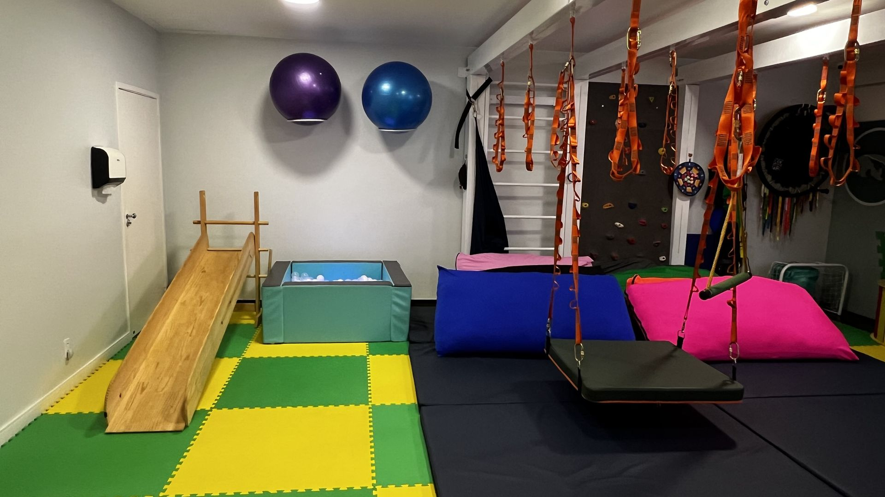
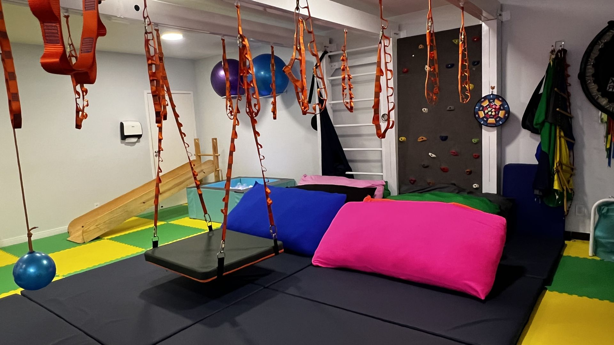
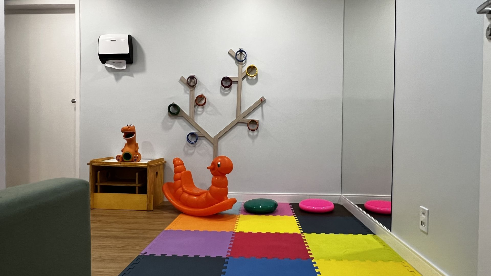
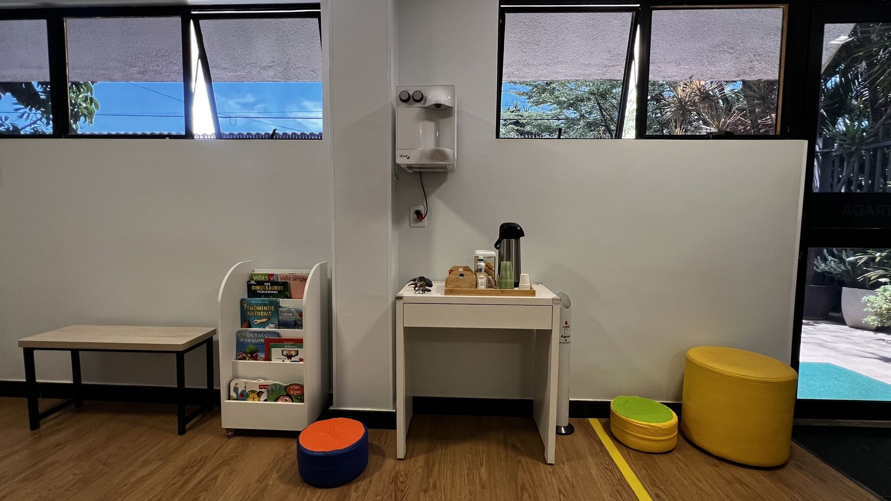
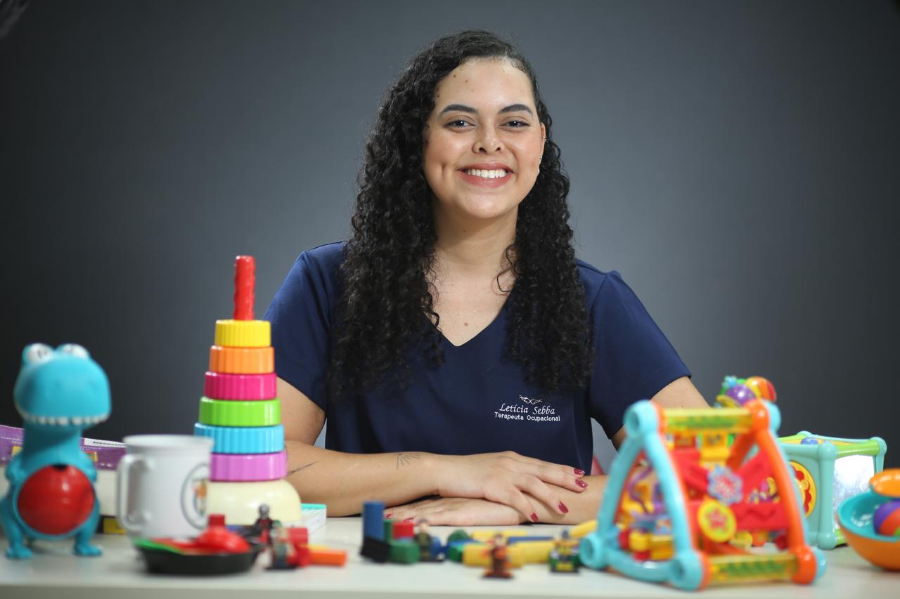
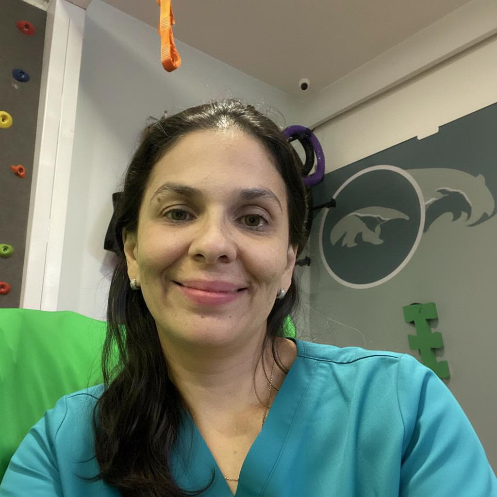
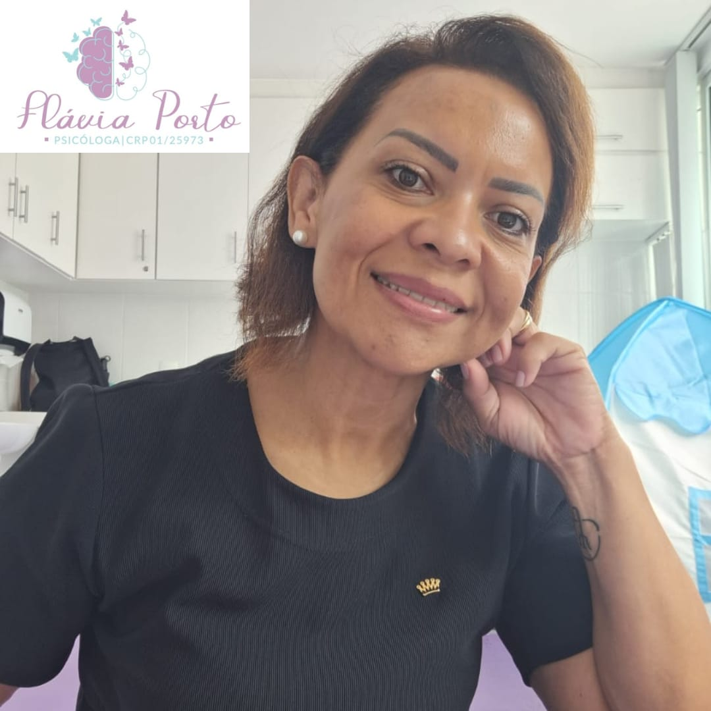
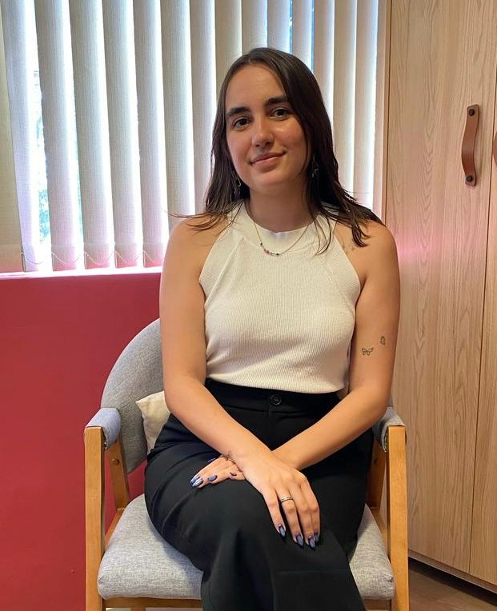
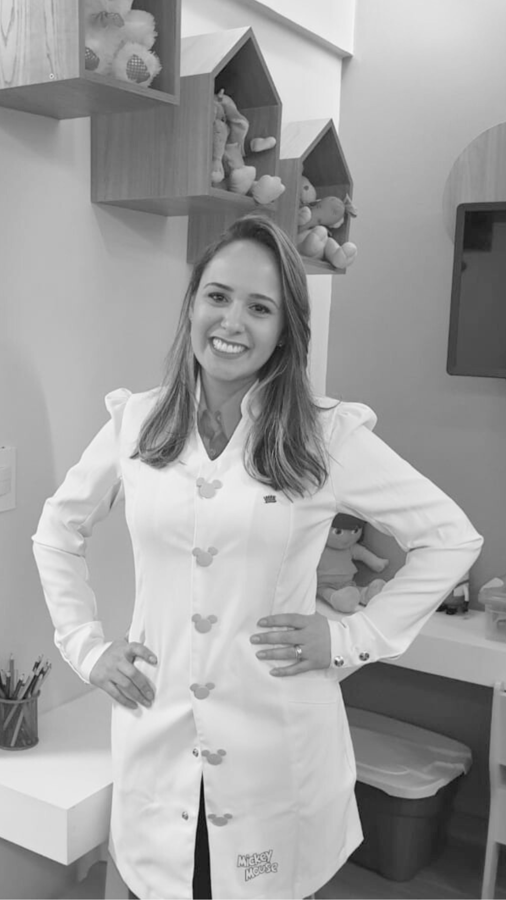
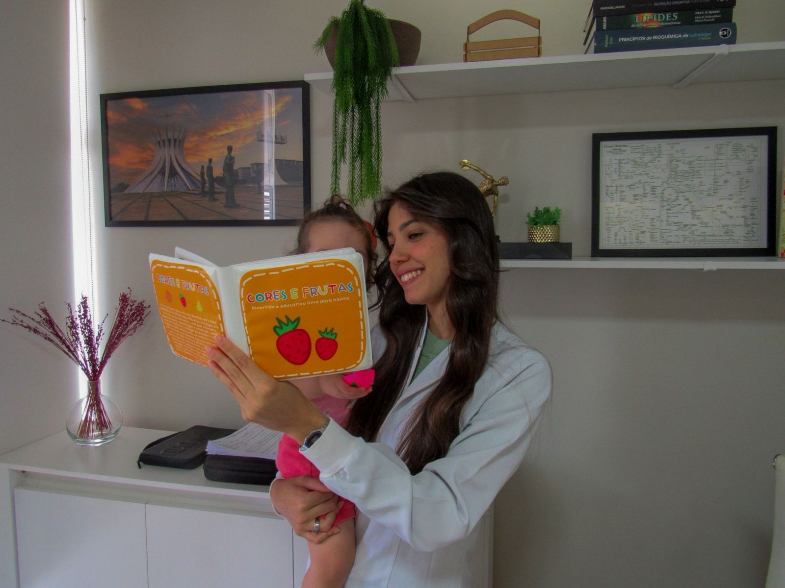

Clínica multiprofissional especializada em desenvolvimento infantil — com equipe técnica, abordagem individualizada e a família como parte ativa do processo.
Baseado em evidências científicas. Centrado na criança.
Quem somos
Não atendemos diagnósticos. Atendemos bebês, crianças e adolescentes — cada um com sua história, seus desafios e seu ritmo.

Missão
Nossa missão é promover desenvolvimento, autonomia e qualidade de vida por meio de uma atuação técnica, individualizada e baseada em evidências científicas, com a família como parte ativa do processo terapêutico.

Modo de Atuação
Atuamos de forma interdisciplinar, com planejamento terapêutico estruturado, objetivos definidos e acompanhamento contínuo. Cada criança é avaliada de maneira individual, considerando suas habilidades, desafios e contexto de vida, para que a intervenção gere impacto funcional e resultados concretos no cotidiano.

Valores
A Toca é guiada por valores que orientam todas as decisões clínicas: compromisso com a ciência, respeito à singularidade de cada criança, ética profissional, transparência nas condutas, trabalho interdisciplinar consistente e formação contínua da equipe.

Propósito
Nosso propósito vai além da intervenção pontual. Construímos caminhos sustentáveis de desenvolvimento, fortalecendo a autonomia da criança e a segurança da família ao longo de sua trajetória.
Pronto para dar o primeiro passo?
Agendar avaliaçãoUma equipe multiprofissional com abordagem técnica, individualizada e baseada em evidências.
Intervenção em AVDs, contextos escolares e atividades lúdicas para crianças com atrasos, transtornos do neurodesenvolvimento e dificuldades funcionais.
Abordagem exclusiva da terapia ocupacional com experiências sensório-motoras estruturadas para crianças com alterações no processamento sensorial.
Foco em controle postural, coordenação, força e funcionalidade. Essencial para atrasos motores, condições neurológicas e síndromes genéticas.
Atendimento psicológico para crianças e adolescentes com foco em regulação emocional, habilidades sociais e manejo comportamental.
Avaliação nutricional e intervenção individualizada, com foco em seletividade alimentar e condições associadas ao neurodesenvolvimento.
Processo estruturado para investigar atenção, memória, linguagem e funções executivas, fundamental para diagnóstico diferencial de TDAH, autismo e transtornos de aprendizagem.
Profissionais qualificados e dedicados ao cuidado infantil.
Crefito 11: 21300-TO
Terapeuta Ocupacional
CREFITO-11 23457
Terapeuta Ocupacional

CREFITO 11 26046-TO
Terapeuta Ocupacional

CREFITO-11 61750-F
Fisioterapeuta
CREFITO 11 356980-F
Fisioterapeuta
CREFITO-7: 437465-F
Fisioterapeuta

CRP 01/25973
Psicóloga

CRP 01/26216
Psicóloga Infantil e do Adolescente

CRN 6103
Nutricionista

CRN 22279-1
Nutricionista
Avaliações reais de quem confia a evolução de seus filhos à Toca do Tamanduá.
"Sempre fomos acolhidas com muito carinho, respeito e profissionalismo. Encontrar um lugar onde minhas filhas são cuidadas com tanta responsabilidade e afeto traz uma tranquilidade que não tem preço."
"A Pabline acompanhou meu filho por 2 anos e pude ver inúmeros ganhos que se perpetuaram na vida dele. A clínica é muito acolhedora com as famílias, com liberdade de participar das sessões."
"Um espaço incrível que une competência técnica e cuidado afetuoso. Um espaço em que me sinto amparada e cuidada juntamente com meu filho."
"Excelente espaço de terapias integradas! A Toca do Tamanduá se destaca pelo olhar humanizado e pelo acolhimento com as famílias. Os profissionais demonstram um compromisso real com o desenvolvimento e o bem-estar dos pacientes."
"Profissionais excelentes. Carinho e atenção desmedidos com as crianças atendidas. Sempre um clima ameno e vibrações positivas."
"Confio 100% na clínica e nos profissionais que trabalham na Toca do Tamanduá. Fisioterapeuta altamente especializada e humanizada."
Tire suas dúvidas sobre o atendimento, processo terapêutico e agendamentos.
O atendimento é voltado a bebês, crianças e adolescentes que apresentam atrasos no desenvolvimento ou transtornos do neurodesenvolvimento. Contempla também síndromes genéticas e dificuldades motoras, cognitivas, sensoriais, emocionais ou comportamentais.
Sinais importantes incluem atrasos nos marcos do desenvolvimento e dificuldades motoras. Seletividade alimentar intensa, alterações sensoriais, dificuldades de atenção ou comportamento também indicam a necessidade de uma análise especializada.
Todos os atendimentos são individualizados. A conduta é definida conforme a avaliação inicial e o plano terapêutico personalizado pela equipe.
Sim, as intervenções são fundamentadas em modelos teóricos consolidados e evidências científicas atualizadas. O trabalho respeita as especificidades do desenvolvimento infantil e as necessidades individuais de cada criança.
Consiste em uma entrevista detalhada com os pais ou responsáveis para compreender a história do desenvolvimento, rotina e dificuldades do cotidiano. São abordados aspectos sensoriais, comportamentais e fatores orgânicos relevantes, podendo ser realizada de forma online.
Não é obrigatório, pois a avaliação pode ser iniciada a partir da demanda direta da família. Quando necessário, a clínica realiza a articulação com o médico e demais profissionais envolvidos no caso.
A família é parte fundamental do processo, recebendo orientações e alinhamentos periódicos. A participação direta nas sessões ocorre sempre que possível.
Os profissionais atuam de forma interdisciplinar, realizando discussão de casos e alinhamento de condutas. Isso garante coerência e continuidade em todo o cuidado oferecido.
Sim, o processo inclui reavaliações periódicas para monitorar a evolução da criança. Isso permite ajustar as estratégias e redefinir objetivos conforme o progresso alcançado.
Não realizamos atendimento direto por convênios. Contudo, emitimos todos os documentos necessários para que a família solicite o reembolso junto ao plano e para declaração de imposto de renda.
Os agendamentos são realizados diretamente via WhatsApp com a nossa recepção. Todos os atendimentos exigem agendamento prévio com horários definidos — não há atendimento por ordem de chegada.
O pagamento dos serviços é realizado exclusivamente via PIX.